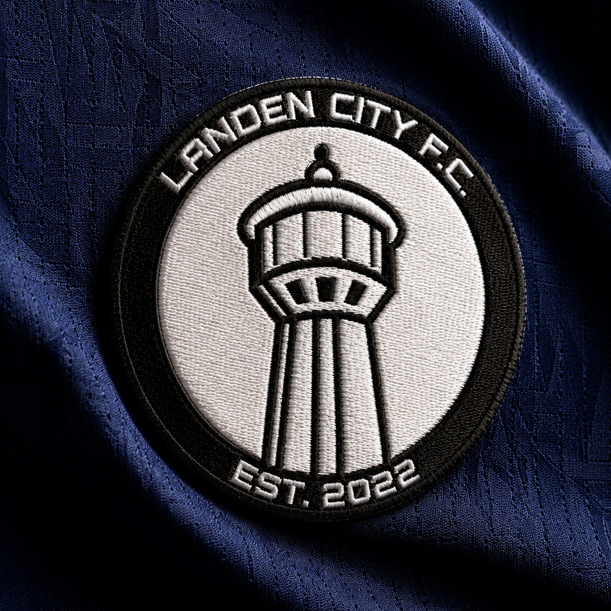
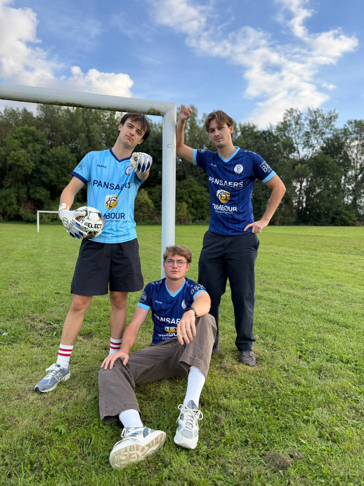
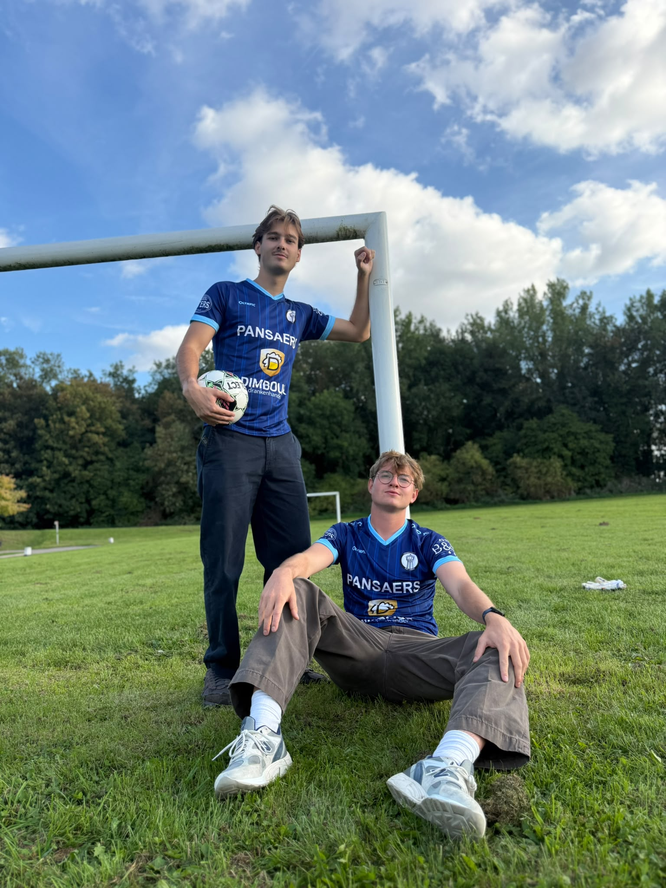

Landen City FC
Kameraadschap als basis, ambitie als toekomst.

Zaalvoetbalclub Landen City FC werd op de schoolbanken opgericht door een groep boezemvrienden. Deze vrienden kennen elkaar al van kinds af aan, of zelfs al hun volledig leven! De eerste jaren vormt Landen City een zaalvoetbalclub in de LZV competitie. Maar wat begon als een passieproject en een manier om de vriendengroep bijeen te houden, groeit nu uit tot iets meer.
Na 4 jaren van vriendschap, inzet en plezier is de tijd rijp voor de volgende stap. Vanaf dit seizoen komt Landen City FC uit in de provinciale zaalvoetbalcompetitie van Vlaams-Brabant, zoals georganiseerd door de officiële Vlaamse zaalvoetbalbond.
In deze nieuwe competitie wil de club met gezonde ambitie verder bouwen aan een mooi verhaal, zowel op als naast het veld. Dit met nog steeds te steunen op twee basisprincipes: vriendschap en plezier.
Om de ambities waar te maken, schakelt de club nu dus een versnelling hoger. Meer content, meer promo en meer evenementen! Blijf dus op de hoogte voor nieuwe info door ons te volgen op alle sociale mediakanalen. Momenteel staat de eerste editie van de Landen City FC Quiz op het schema!
Fotoalbum

